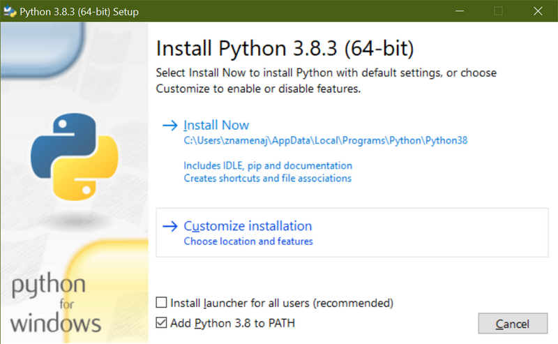
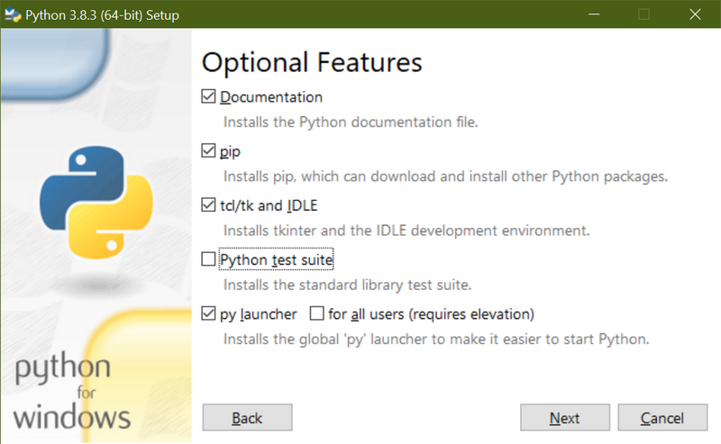
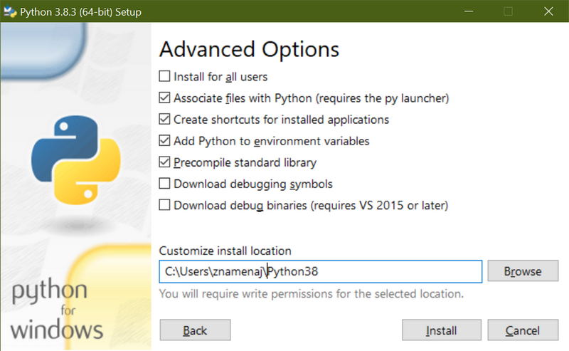
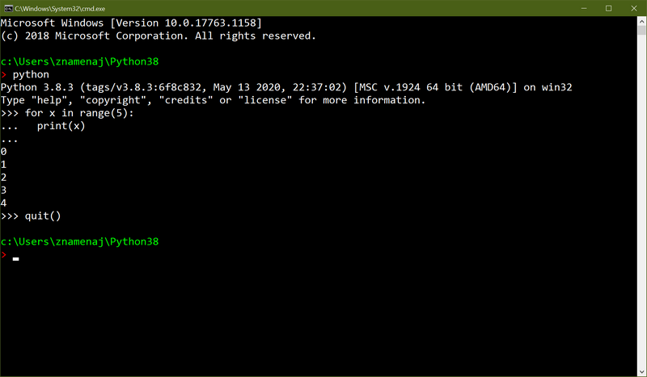
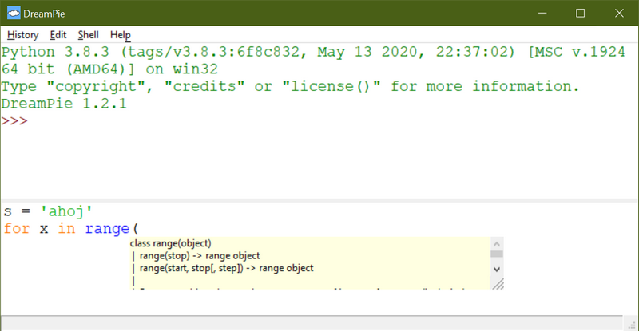
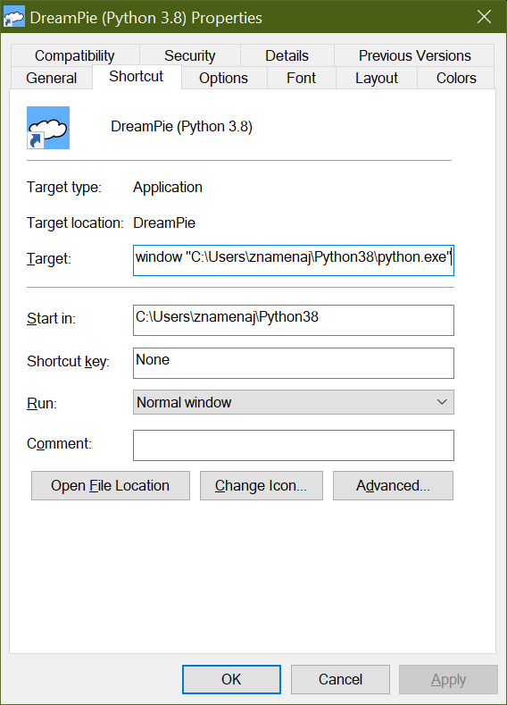

Instalace potřebných programů
by Jiří Znamenáček
Úvod
Z mnoha důvodů (z nichž některé ukážu na první přednášce), jediným funkčním způsobem jak pouštět pythoní programy je příkazová řádka. A to navzdory rozšíření profesionálních programátorských IDE* – věřte mi, že i v nich spousta věcí jednoduše nefunguje nebo funguje jinak.
Ovšem příkazové řádky se netřeba bát, zase tak složitá – alespoň pro naše použití – není, a navíc základy Pythonu si budeme ukazovat v něčem příjemnějším, konkrétně nástroji Dreampie. A ano, spousta věcí v něm funguje jinak než na příkazové řádce…
Psát programy pak můžete buď v nějakém tom profesionálním nástroji (PyCharm má verzi zdarma, Microsoft Visual Code je také volný, škola má licenci i na větší nástroje), což pokládám – alespoň pro začátek – za naprosto zbytečné (ba spíš přímo škodlivé), nebo v obyčejném „programátorském“ textovém editoru. Ovšem pozor – MS Office Word a podobné to v žádném případě opravdu nejsou!
Python I
Pythoní programy se nejčastěji vyskytují ve formě tzv. skriptů, což jsou obyčejné textové soubory (převážně v kódování UTF-8), jejichž obsah ovšem umí tzv. interpretr jazyka Python přečíst, pochopit a vykonat.
Pro to je ovšem potřeba, abyste buď sami řekli, že obsah daného souboru má provést Python, nebo operační systém musí poznat, že na daný soubor má Python tak zvaně „zavolat“.
Proto se pythoní skripty nejčastěji ukládají do souborů s příponou *.py (ačkoli jde vlastně o obyčejné texty a slušela by jim tak třebas koncovka *.txt; nebo žádná), přičemž operační systém ví, že takové soubory má „spouštět“ právě pomocí interpretru Pythonu.
Python II
Aby tedy všechno správně fungovalo, je nejsnažší mít v počítači jenom jeden „hlavní“ Python, který bude operační systém volat, pokud narazí na py-soubory.
Nejpoužívanějším a nejnovější novinky obsahujícím (ne však nutně i nejvhodnějším na všechna použití!) je interpret CPython, aktuálně ve verzi 3.14.3.
Na dalších stránkách si ukážeme, jak instalátor nastavit pro nejjednodušší možný případ – jeden jediný „hlavní“ Python pro jednoho uživatele. (Složitější případy už je třeba řešit složitěji.)
PS: Kontrola instalačních souborů
Než spustíte instalátor, měli byste si ověřit, že je skutečně tím, za co se vydává, a že se v něm neukrývají nějaké mršky viry nebo něco podobného. Na Linuxu jde vše celkem snadno provést z příkazové řádky, případně jsou k dispozici klikací grafické nástroje. Na Windows je to z příkazové řádky také možné – dnes typicky z prostředí Power Shell, ale samozřejmě na to existuje i hromada grafických nástrojů, byť je složitější najít vhodně.
Prvním bodem kontroly je tzv. kontrolní součet (dnes typicky SHA256 a podobné). To je číslo, které je nějakým způsobem spočítané z binárních dat (instalačního) souboru a ideálně ho nějak reprezentuje.* Druhý bod kontroly – tzv. podpis kryptografickým klíčem (viz asymetrická kryptografie, GPG) – pak ověřuje, že soubor skutečně pochází od zdroje, který ho vyrobil. Třetím součástí je kontrola antivirovým systémem – už mockrát se stalo, že oficiálně distribuované soubory byly napadeny a obsahovaly např. viry.
PS: Pokud si někdo dá opravdu záležet a provede velmi sofistikovaný útok například na úrovni DNS, můžete stáhnout soubor, který projde všemi třemi kontrolami, ale přitom nebude pocházet ze správného místa, ačkoli si to budete myslet. Pak máte ovšem smůlu. Ostatně stejně jako s distribucí veřejných klíčů pro GPG – pokud vám daný klíč osobně nepředal člověk, kterému patří, také tu jistotu nikdy nebudete mít úplnou.
Python III – instalace na Windows (1)
Na první instalační obrazovce, než kliknete na výběr Customize installation, odškrtněte instalaci pro všechny uživatele (vyžaduje práva administrátora) a naopak zaškrtněte přidání Pythonu do tzv. cesty (díky čemuž operační systém bude vědět, kde ho má hledat):

Python III – instalace na Windows (2)
Druhou instalační obrazovku zaškrtejte podle obrázku:

Python III – instalace na Windows (3)
A třetí taktéž. Můžete zde také upravit cestu k programu na něco rozumnějšího, než je výchozí výběr:

Python IV
Předchozí slajdy popisují nejjednodušší případ pouze jednoho interpretru Pythonu v počítači. Na naše hraní tak akorát. Kdo to ale bude myslet s Pythonem vážně, brzo mu to asi stačit nebude.
Přitom hlavní Python může být jenom jeden, takže vícero Pythonů už se musí řešit složitěji (často i tak, že hlavní není žádný z nich). A protože Python se málokdy používá jen tak sám o sobě, přidává se k tomu i problém řešení závislostí všech dalších programů.
PS: Oblíbeným řešením tohoto problému býval kupříkladu systém Conda, ale po změně pravidel užívání a zpoplatnění výchozího repozitáře balíčků je už lepší použít něco jiného.
Python V
Typický pythoní program se spouští tak, že se na soubor s programem pustí pythoní interpretr. Při nastavení z ukázkové instalace by na příkazové řádce v konzoli mělo stačit soubor tak zvaně „odentrovat“..
> program.py↵
..protože operační systém ví, jak se k souborům s příponou *.py chovat.
> python program.py↵
..případně i s plnou cestou k pythonímu interpretru.
Pro podrobnosti se můžete podívat do přednášky o příkazové řádce ve Windows. Kdo bude pracovat v Linuxu, pravděpodobně se bez příkazové řádky už stejně dávno neobešel.
Python interaktivně – REPL
Kromě spouštění skriptů v Pythonu, což budeme potřebovat postupem času víc a víc, se dá interpretr pustit také interaktivně – příkazová řádka konzole je v tom případě nahrazena příkazovou řádkou interpretru a všechno funguje jinak:

Ovšem tento tzv. REPL (read–eval–print loop) je zrovna v případě Pythonu hodně nepohodlný – Python totiž používá pro zápis kódu odsazené bloky textu a to se tedy zapisuje s jednořádkovou historií konzole velmi, velmi špatně.
Python interaktivně – Dreampie aspol.
Existuje mnoho nadstaveb nad touto jednoduchou příkazovou řádkou, které uvedený problém nějak řeší (jedna z nich – IDLE – je dokonce v základní instalaci Pythonu), ale já mám nejradši Dreampie, který má historii víceřádkovou a navíc obsahuje nápovědu a jiné vymoženosti:

Dreampie – instalace
PS pro studenty: Dreampie si NEinstalujte. Na ukázky a procvičování kódu je sice pořád nejlepší, ale už pěknou řádku let je nepodporovaný a nainstalovat ho je čím dál tím těžší.
Na Windows jednoduše stáhněte a pusťte instalační balíček.
Pokud máte v systému pouze jeden Python, pravděpodobně to pozná a nastaví se na jeho používání. Pokud ne, můžete zkusit položku „Add Interpretr“ z nabídky Start Windows (která ale u mě kdo ví proč chce administrátorská práva).
Pokud všechno selže, musíte si na něj (respektive na soubor dreampie.exe) vyrobit vlastní zkratku (soubor *.lnk) a v jejích „Vlastnostech“ (typicky přes pravé tlačítko myši, pokud nejste leváci) nastavit „Target“ nějak jako u mě:
"C:\Program Files (x86)\DreamPie\dreampie.exe" --hide-console-window "C:\Users\znamenaj\Python38\python.exe"

PS: Dreampie a Python 3.10+
Kdo zkusil pustit Dreampie s Pythonem 3.10 (a novějším), zjistil, že to nejde. Dreampie je totiž již velmi starý a postavený na grafickém frejmworku, který nebyl (a nebude) pro trojkový Python nikdy naportován, a tak mimo jiné obsahuje kusy kódu, které prostě postupně přestávají fungovat.
Prvním z takových kousků je přesunutí objektu Callable do jmenného prostoru collections.abc.Callable. Oprava je naštěstí jednoduchá – stačí v souboru Dreampie/data/subp-py3/dreampielib/subprocess/__init__.py přepsat řádku 843 na následující tvar:
r = (isinstance(obj, collections.abc.Callable)
r = (callable(obj) .
Python 3.12 vyřadil knihovnu imp, takže další oprava se týká souboru Dreampie/data/subp-py3/dreampielib/subprocess/find_modules.py. Na řádce 25 je třeba zaměnit její import za novější..
from importlib.machinery import SOURCE_SUFFIXES, BYTECODE_SUFFIXES, EXTENSION_SUFFIXES
..a následně pak přepsat logiku získávání přípon na řádce 33:
r'(?:%s)$' % '|'.join(re.escape(suffix) for suffix in (SOURCE_SUFFIXES + BYTECODE_SUFFIXES + EXTENSION_SUFFIXES)))
Jak dlouho ale ještě půjde Dreampie takovýmto způsobem opravovat*, toť otázka. Nu a jakým jiným pěkným REPL-IDEčkem ho nahradit, toť ještě větší…
Psaní větších programů
Dreampie je fajn na hraní a zkoušení kratších kousků kódu (historie zadávacího okénka se vyvolává pomocí CTRL+↑), ale kromě toho, že v něm některé věci prostě nefungují (jako například nápověda help() nebo část formátování pro funkci print()), na psaní programů opravdu není.
Větší programy se nejlépe píší v nějakém editoru (sadomasochisti to dávají i v Poznámkovém bloku), ideálně nějakém určeném pro programátory, který přinejmenším obsahuje zvýrazňování syntaxe příslušného jazyka, často i něco navíc.
PS: Velmi důležité také je, aby editor uměl ukázat tzv. bílé znaky (mezery, tabulátory, odřádkování…), protože pro Python jsou životně důležité, typ kódování souboru, který sice nemusí být zrovna UTF-8, ale pak se musí do hlavičky pythoního programu toto jiné kódování explicitně zapsat, a časem také typ konce řádky (protože se mezi operačními systémy liší).
Některé vhodné textové editory
Textový editor je velmi silně ovlivněn osobními preferencemi – většina studentů programování na ČVUTu odmítá pracovat jinde než v dedikovaném pythoním IDE, jiní na druhou stranu zvládají editor Vim v příkazové řádce linuxové konzole. Následují odkazy na několik prověřených (a většinou i sympaticky malých) editorů..
- Notepad2
- Notepad++
- PSPad (český program)
- Sublime Text (placený, ale na zkoušku možno používat zdarma)
- CotEditor (pro MacOS)
..plus několik plnohodnotných pythoních IDE:
- Thonny (navzdory určení pro začátečníky obsahuje velmi pokročilé věci)
- Pyscripter
- PyCharm (volná i placená verze)
Žádný konkrétní vám nutit nemůžu, ale nějaký, který osobně vám bude vyhovovat, si časem budete muset vybrat.
Poznámka k použití „Jupyter Notebook“
Dnes už asi prakticky každý, kdo slyšel o použití programovacího jazyka Python nejen ve vědě, zakopl o Jupyter Notebook. A studenti tak mají tendenci ho používat na psaní programů. A vůbec to není dobrý nápad :-)
Abychom si rozuměli – Jupyter je bezvadný nástroj, ale především na to, na co byl určen. A to je záznam komplexního výpočtu a/nebo práce nad nějakými daty. Pro psaní testovacích výukových programů (nebo nedejbože zkouškových) se ale vůbec nehodí. Ne že by to nešlo, když se budete hodně moc krotit a hlídat, ale nestojí to za to. (Kdyby už jen kvůli tomu, že buňky s kódem se nemusí vyhodnotit v zapsaném pořadí a musíte na to myslet.)
Zkrátka a dobře – Jupyter se naučte, bude se vám hodit (a stoupne vaše cena na trhu práce), ale pro výuku Python'u (zvlášť u úplných začátečníků) na něj radši (dočasně) zapomeňte.
Na závěr
Kromě vhodné distribuce Pythonu a vyhovujícího programátorského editoru se každý, kdo to bude myslet s Pythonem ve vědě vážně, bude muset časem pořádně naučit příkazovou řádku v Linuxu. A to prostě proto, že sice dnes už dávno máme každý svůj počítač, ale výpočty se staly tak náročnými, že – už zase! – musí běžet na nějakých vzdálených strojích, které je „utáhnou“. A tyto stroje jsou prakticky naprosto univerzálně postavené na operačním systému Linux a přistupuje se k nim pomocí protokolu SSH v příkazové řádce.
Ale to je jenom upozornění do budoucna, pokud budete ve vědě programovat ^_~ Také vám nebude zdaleka stačit jenom Python (i když je dnes opravdu skoro všude a na hodně věcí je i přes své mouchy víc než vyhovující).